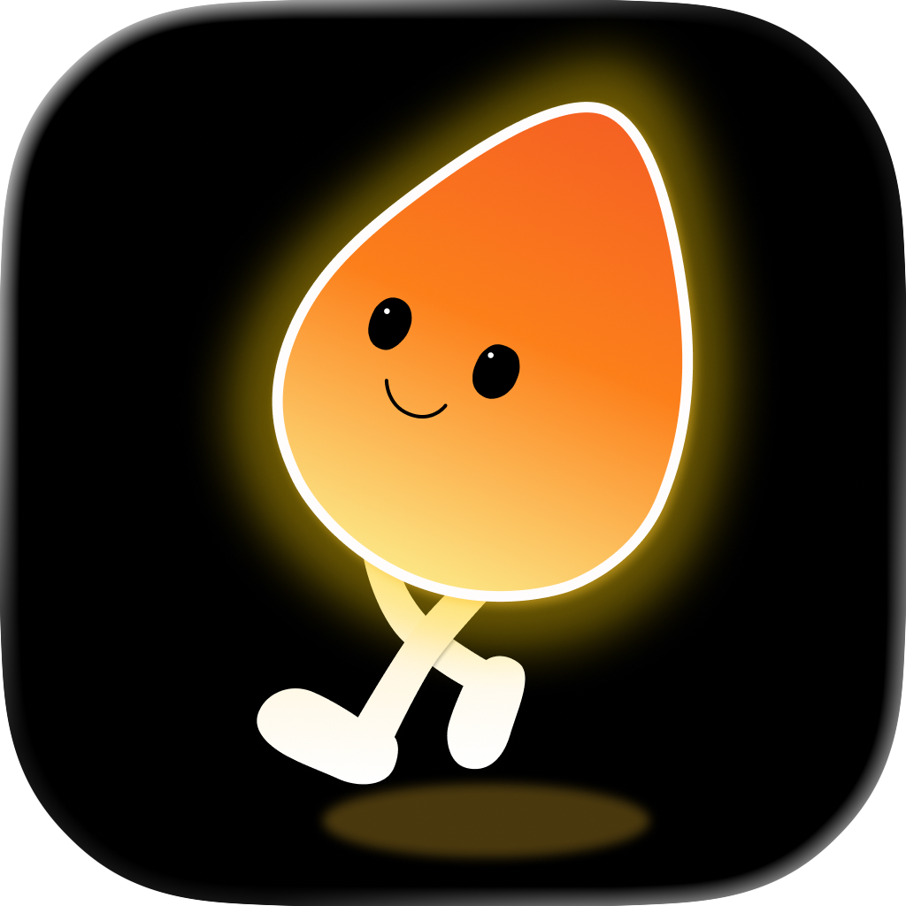

How to Stop Doomscrolling (What Actually Worked for My Mom)
If you’ve ever tried to stop doomscrolling, you know how hard it is.
Screen Time limits don’t work. App blockers don’t work.
Because at the end of the day, you can always tap “Ignore.”
I saw this problem up close at home — and it pushed me to build something different.
The Silent Problem at Home
Every time I visited home, the scene was the same.
My mom would be lying on the couch, completely absorbed in an endless stream of short-form videos — TikTok, Douyin, mini-dramas. One clip turned into ten. Ten turned into hours.
It wasn’t just about “wasting time.”
It was her health.
The more she scrolled, the less she moved. Her daily steps dropped. Her routine slowly disappeared. And the hardest part was that it didn’t feel urgent — just something that quietly became normal.
I tried what most people would try:
- Setting Screen Time limits
- Turning off certain apps
- Reminding her to take breaks
None of it really worked.
Because all of them rely on one thing:
Self-control, exactly when you don’t have it.
Why Most Screen Time Solutions Don’t Work
Most tools are built on the idea of discipline.
But discipline breaks down when friction is low.
If you can bypass a limit in one tap, it’s not really a limit — it’s a suggestion.
And when you’re already deep in a scroll loop, suggestions don’t stand a chance.
That’s when I realized:
The problem isn’t access. It’s how easy access is.
The Insight: Make It Earned
Instead of trying to block usage completely, what if we made it something you had to earn?
Not punish. Not restrict.
Just… trade.
If you want to scroll, you can.
But first, you move.
A Simpler System: Move First, Then Scroll
I’m a developer, so I turned that idea into something simple:
You set a daily step goal.
Until you reach it, the apps you choose stay locked.
Once you’ve moved enough for the day, everything unlocks.
No timers. No repeated interruptions. Just one clear goal.
It’s not about forcing you — it’s about making movement the easiest way forward.
How I Designed It (For My Mom, Not Power Users)
Because I built this for my mom, I kept three rules in mind:
1. It had to be extremely simple
No complicated setup.
Just:
- Connect your step data
- Choose the apps you want to control
- Set a daily goal
That’s it.
2. It had to feel fair
You’re not permanently blocked.
Once you’ve moved enough, everything is available again for the rest of the day.
It’s flexible — you can adjust your goal — but the idea is to stay honest with yourself.
3. It had to respect privacy
Your step data is only used to track progress.
Everything stays on your device. No data is sent anywhere.
What Happened Next
I installed an early version on my mom’s phone.
At first, she didn’t like it.
But then something interesting happened.
To unlock her favorite shows, she started walking around the house.
Then around the garden.
Then just… moving more throughout the day.
One day, she hit 3,000 steps before lunch — just to “earn” her screen time later.
It wasn’t perfect.
But it was working.
And more importantly, it didn’t feel like punishment.
A Different Way to Think About Screen Time
Most tools try to take something away from you.
This does the opposite.
It keeps the reward — but changes the path to it.
And that small shift makes a big difference.
Try Step1st on the App Store
Step1st is now live on the App Store for iPhone.
If this sounds like something you — or someone in your family — might need, you can download it here:
→ Download Step1st on the App Store
Free to download. Optional monthly and yearly subscriptions are available after trial.
One Question
How are you dealing with doomscrolling — for yourself or for someone close to you?
I’m still refining this, especially for non-technical users like my mom.
Would love to hear what’s worked (or what hasn’t).
Featured in this story

Step1st
Dopamine detox through movement. Unlock your distracting apps only after hitting your daily step goal.
- "Walk-to-unlock" friction for healthy habits
- Ideal for parents or chronic doomscrollers
- Privacy-first: syncs locally with HealthKit
PurrrrrFocus
The "quiet" alternative to social media. A minimalist focus timer that replaces noisy feeds with Zen art.
- Distraction-free Pomodoro sessions
- Traditional ink-wash (Guohua) aesthetics
- Built for offline focus and digital peace